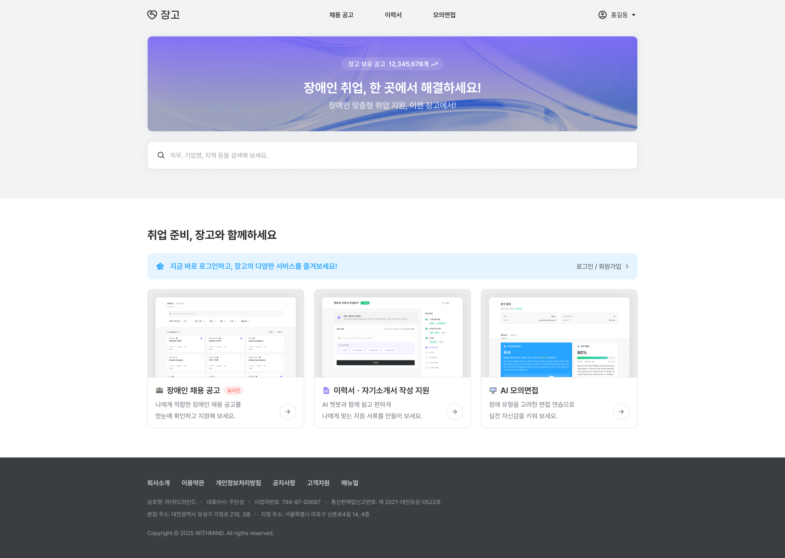

장고
장애인 구직자와 기업, 복지관을 연결하는 고용 플랫폼. 세 사용자 그룹이 각각 쓰는 사이트를 만들면서, 접근성을 ‘나중에 점검할 항목’이 아니라 화면 설계의 기준으로 앞에 뒀습니다.

프로젝트 개요
공고 조회부터 이력서 작성, 모의면접, 기업의 결과 확인까지를 한 서비스에 담은 장애인 고용 플랫폼입니다.
구직자와 기업, 복지관이 같은 채용 데이터를 각자 다른 목적으로 봅니다. 장애 유형에 따라 쓸 수 있는 화면이 달라진다는 점이 설계의 기준이었습니다.
장애 유형에 따라 갈라지는 면접
카메라 앞에서 말하는 방식을 전제로 화면을 짜면 그 전제가 맞지 않는 사용자는 시작을 못 합니다. 청각·안면장애 사용자에게는 영상 없이 질문을 읽고 답변을 입력하는 텍스트 면접을 따로 만들었습니다.
진행 패널에는 자기소개, 장애 맞춤 질문, 직무 질문, 이력서 기반 질문 단계를 아이콘과 텍스트로 같이 표시해 현재 위치를 화면만 보고 알 수 있게 했습니다.
이력서 자동 작성
인적 사항과 희망 직무를 넣으면 이력서·자기소개서·경력기술서 초안이 만들어집니다. 빈 칸을 한 번에 다 보여주면 첫 화면에서 멈추기 때문에 단계를 잘게 쪼갰고, 문서가 생성되는 동안 진행 상태를 표시했습니다.
이력서 기반 공고 추천
이력서와 면접 분석 결과로 맞는 공고를 추천합니다.
추천 공고에는 AI Pick 배지를 붙이되, 색으로만 구분하지 않고
테두리·배지·문구를 함께 써서 하나만 읽혀도 알 수 있게 했습니다.
챗봇과 지원사업 정보
챗봇은 텍스트와 음성으로 서류 작성과 공고 검색을 돕습니다. 자유 입력 대신 직무 → 강점 → 경험 순서의 단계형 선택을 기본으로 뒀습니다.
지원사업은 사업마다 항목 형식이 달라서, 카드마다 같은 자리에 같은 항목이 오도록 맞췄습니다.
구직자 · 기업 · 복지관
한 화면을 권한으로 나누는 대신 사이트를 셋으로 분리했습니다. 비활성화된 기능이 화면에 남아 있으면 그것부터 탐색을 방해합니다.
- 구직자 — 공고 조회, 이력서 작성, 모의면접
- 기업 — 공고 등록, 지원자 이력서와 면접 리포트 확인
- 복지관 — 담당 구직자 준비 상황 확인 (연동 코드로 연결)
기술 스택
세 사이트가 컴포넌트를 공유하되 사용자 그룹별로 다르게 조립되도록 구조를 나눴습니다. AI 모델은 과제 팀이 맡았고, 분석 결과를 받아 화면에 붙이는 쪽을 담당했습니다.
정리
접근성을 화면을 나누는 기준으로 앞에 뒀습니다. 청각장애 사용자는 영상 면접을 볼 수 없다는 조건 하나가 면접 모드와 리포트 구성까지 바꿨습니다.